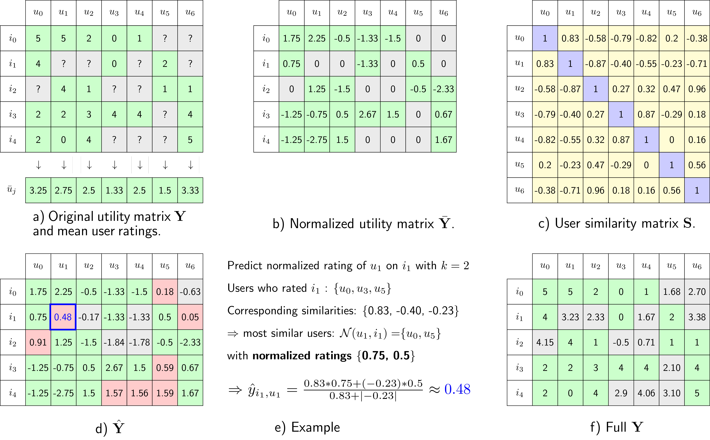

Collaborative filtering là một phương pháp trong lĩnh vực học máy và khai phá dữ liệu, được sử dụng để dự đoán sở thích của một người dùng dựa trên thông tin về sở thích của nhóm người dùng tương tự. Ý tưởng chính của collaborative filtering là dựa vào thông tin từ những người dùng giống nhau (điểm review) để đưa ra các dự đoán cho một người dùng cụ thể.
Có hai loại chính của collaborative filtering:
User-based Collaborative Filtering (UBCF): Dựa trên sự tương tự giữa người dùng. Nếu người dùng A và B có sở thích giống nhau trong quá khứ, thì sản phẩm mà người dùng A đã thích có thể được đề xuất cho người dùng B và ngược lại.
Item-based Collaborative Filtering (IBCF): Dựa trên sự tương tự giữa các sản phẩm. Nếu một người dùng thích một số sản phẩm, hệ thống sẽ đề xuất các sản phẩm tương tự dựa trên sự tương đồng giữa các sản phẩm.
Ưu điểm lớn nhất của collaborative filtering là không yêu cầu thông tin chi tiết về sản phẩm hoặc người dùng. Thay vào đó, nó tận dụng thông tin từ cộng đồng người dùng. Tuy nhiên, cũng có nhược điểm như vấn đề lớn khi số lượng người dùng và sản phẩm làm tăng độ phức tạp của quá trình tính toán sự tương đồng.
Các hệ thống đề xuất sản phẩm trên các trang web như Amazon, Netflix, hay các dịch vụ âm nhạc như Spotify thường sử dụng collaborative filtering để cải thiện trải nghiệm người dùng bằng cách đề xuất những nội dung mà người dùng có thể quan tâm.
51.2 Phương pháp tính toán
Collaborative Filtering được chia thành 2 nhóm: User-Based Collaborative Filtering (UBCF) và Item-Based Collaborative Filtering (IBCF)
51.2.1 User-user CF
Phương pháp này sẽ tính toán sự tương quan giữa các users với nhau (similarity).
Các bước tính toán:
Bước 1: Xây dựng ma trận rating matrix dựa trên mức độ đánh giá các bộ phim của các khách hàng này

Bước 2: Chuẩn hóa dữ liệu rating để đưa về cùng scale
Bước 3: Tính toán Similarities giữa các Users và Items : Phương pháp thường được sử dụng là Cosine Similarity giữa các Users với nhau. Giá trị của Cosin Similarity giữa các Users sẽ trong khoảng [-1,1]. Giá trị 1 thể hiện 2 vector hoàn toàn tương đồng với nhau, với - 1 sẽ thể hiện ngược lại qua đó sẽ tạo ra ma trận Similarity. Từ ma trận Similarity ta sẽ biết những Users nào có hành vi giống với Users nào.
Bước 4: Sử dụng concept của phương pháp K-nearest neighbor để dự báo giá trị rating bị missing. CF sẽ lựa chọn k-users có mức độ similarity cao nhất (tức các khách hàng có hành vi giống nhất)
Bước 5: Tính giá trị dự báo rating items dựa trên trung bình điều hòa giá trị similarity và rating của các k users giống nó nhất
51.2.2 Item-Item CF
Phương pháp này sẽ tính toán sự tương quan giữa các Item với nhau (similarity). Các bước tính toán tương tự tuy nhiên sẽ thực hiện việc tính toán similarity theo các Item với nhau
51.3 Thực hành
Data được sử dụng là MovieLense ghi nhận lịch sử rating phim của 943 khách hàng với 1664 bộ phim. Các bộ phim được rating sẽ có giá trị từ 1 đến 5. Mục tiêu của bài thực hành là xây dựng và kiểm định recommendation model để suggest cho khách hàng nên xem bộ phim gì tiếp theo.
Bước 1: Chia bộ data thành 2 phần: Train (chiếm 90% dữ liệu), Test (10% còn lại). Ở đây ta sẽ chia Test thành 2 data nhỏ là Test_known dùng để predict và Test_unknown dùng để kiểm định sự chính xác của mô hình
library(recommenderlab)data(MovieLense)MovieLense
943 x 1664 rating matrix of class 'realRatingMatrix' with 99392 ratings.
# Metadata - category các bộ phimMovieLenseMeta[1:5,1:10]
$`0`
[1] "Entertaining Angels: The Dorothy Day Story (1996)"
[2] "Little City (1998)"
[3] "Convent, The (Convento, O) (1995)"
[4] "Big Bang Theory, The (1994)"
[5] "My Life and Times With Antonin Artaud (En compagnie d'Antonin Artaud) (1993)"
$`1`
[1] "Leading Man, The (1996)"
[2] "Convent, The (Convento, O) (1995)"
[3] "Lay of the Land, The (1997)"
[4] "Wooden Man's Bride, The (Wu Kui) (1994)"
[5] "Johnny 100 Pesos (1993)"
$`2`
[1] "Wooden Man's Bride, The (Wu Kui) (1994)"
[2] "Entertaining Angels: The Dorothy Day Story (1996)"
[3] "Legal Deceit (1997)"
[4] "Boys, Les (1997)"
[5] "Other Voices, Other Rooms (1997)"
$`3`
[1] "Bent (1997)" "Convent, The (Convento, O) (1995)"
[3] "Venice/Venice (1992)" "Men of Means (1998)"
[5] "Leading Man, The (1996)"
$`4`
[1] "Convent, The (Convento, O) (1995)"
[2] "For the Moment (1994)"
[3] "My Life and Times With Antonin Artaud (En compagnie d'Antonin Artaud) (1993)"
[4] "Coldblooded (1995)"
[5] "Visitors, The (Visiteurs, Les) (1993)"
$`5`
[1] "Golden Earrings (1947)"
[2] "Ballad of Narayama, The (Narayama Bushiko) (1958)"
[3] "I Don't Want to Talk About It (De eso no se habla) (1993)"
[4] "Jupiter's Wife (1994)"
[5] "Star Kid (1997)"
$`6`
[1] "Beans of Egypt, Maine, The (1994)" "Death in Brunswick (1991)"
[3] "Reluctant Debutante, The (1958)" "Jupiter's Wife (1994)"
[5] "The Deadly Cure (1996)"
$`7`
[1] "Daniel Defoe's Robinson Crusoe (1996)"
[2] "Crossfire (1947)"
[3] "Jupiter's Wife (1994)"
[4] "Marlene Dietrich: Shadow and Light (1996) "
[5] "Convent, The (Convento, O) (1995)"
$`8`
[1] "Bent (1997)" "Convent, The (Convento, O) (1995)"
[3] "Mat' i syn (1997)" "B. Monkey (1998)"
[5] "Other Voices, Other Rooms (1997)"
$`9`
[1] "Daniel Defoe's Robinson Crusoe (1996)"
[2] "Frisk (1995)"
[3] "Legal Deceit (1997)"
[4] "Golden Earrings (1947)"
[5] "Boys, Les (1997)"
51.4 Ưu nhược điểm
Ưu điểm:
Thuật toán đơn giản, tính toán nhanh chóng, dễ triển khai và sử dụng
Phản ánh dữ liệu từ người dùng
Nhược điểm:
Không áp dụng được với các nhóm sản phẩm mới
Nhạy cảm với dữ liệu sai - đặc biệt với các trường hợp đánh giá thông tin sai lệch